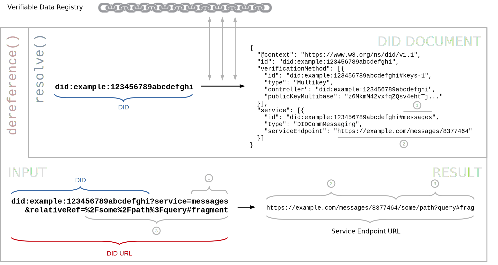

Decentralized identifiers (DIDs) are a new type of identifier for
verifiable, "self-sovereign" digital identity. DIDs are fully under the
control of the DID controller, independent from any centralized registry,
identity provider, or certificate authority. DIDs resolve to DID
Documents — simple documents that describe how to use that specific DID.
This document specifies the algorithms and guidelines for resolving DIDs
and dereferencing DID URLs. Additionally, this document describes the
input and output metadata related to the DID resolution processes and
further describes the data structures that may be returned from a DID resolution
request. This document relies on the core DID specification,
Decentralized Identifiers (DIDs) v1.1,
which describes the underlying DID architecture in full detail.
Portions of the work on this specification have been funded by the
United States Department of Homeland Security's Science and Technology
Directorate under contracts HSHQDC-17-C-00019. The content of this
specification does not necessarily reflect the position or the policy of
the U.S. Government and no official endorsement should be inferred.
Work on this specification has also been supported by the Rebooting the
Web of Trust community facilitated by Christopher Allen, Shannon
Appelcline, Kiara Robles, Brian Weller, Betty Dhamers, Kaliya Young, Kim
Hamilton Duffy, Manu Sporny, Drummond Reed, Joe Andrieu, and Heather
Vescent.
Introduction
DID resolution is the process of obtaining a DID document for a given DID. This is one
of four required operations that can be performed on any DID ("Read"; the other ones being "Create", "Update",
and "Deactivate"). The details of these operations differ depending on the DID method.
Building on top of DID resolution, DID URL dereferencing is the process of retrieving a representation
of a resource for a given DID URL. Software and/or hardware that is able to execute these processes is called
a DID resolver.
This
specification defines common
requirements, algorithms including their inputs and results, architectural options, and various considerations for the
DID resolution and DID URL dereferencing processes.
Note that while this specification defines some base-level functionality for DID resolution, the actual steps
required to communicate with a DID's verifiable data registry are defined by the applicable
DID method specification.
Implementer Overview
By invoking a DID resolver using the standard resolve(did, resolutionOptions) interface (as defined in
the DID Resolution section) one can obtain a DID document and accompanying metadata
(e.g., `contentType`, proof, versioning) which an application can use to validate a user's cryptographic keys,
service endpoints, or status.
For example, a wallet app could resolve did:example:123?versionTime=2021-05-10T17:00:00Z
using the `versionTime` parameter to retrieve the state of that DID at a past time, or a client could
dereference a DID URL
like did:example:123?service=files&relativeRef=/resume.pdf
(see here for detailed example)
to fetch a user's resume stored via a service declared in the DID document.
Further, the specification's DID URL dereferencing algorithm shows how
a client can follow a fragment (e.g., #key-1) to extract a particular verification method from
the DID document (see here for detailed example).
In practice, implementers validate their resolver against the
DID Resolution Test Suite which exercises
normative MUSTs and error conditions (such as invalid DIDs, deactivated DIDs, unsupported methods,
relative URL expansion, etc.) to ensure that client applications can reliably depend on correct resolution behavior
across different DID methods.
A conforming DID resolver is any algorithm
realized as software and/or hardware that complies with the relevant normative
statements in .
A conforming DID URL dereferencer is any
algorithm realized as software and/or hardware that complies with the relevant
normative statements in .
Audience
This specification has three primary audiences: implementers of conformant DID methods;
implementers of conformant DID resolvers; and implementers of systems and services
that wish to resolve DIDs using DID resolvers. The intended audience includes,
but is not limited to, software architects, data modelers, application developers,
service developers, testers, operators, and user experience (UX) specialists.
Other people involved in a broad range of standards efforts related to decentralized
identity, verifiable credentials, and secure storage might also be interested in
reading this specification.
Use Cases
The DID resolution specification is intended to support a broad range of use cases
by defining a standardized interface to resolve DIDs and dereference DID URLs
independent of the DID method of any particular DID. These usecases include:
A decentralized address book: By using DIDs as identifiers for people and organizations
within an address book, the controllers of those DIDs can independently update the contents of
their DID documents. Through DID resolution these DIDs can be resolved to obtain the
current state of the DID document for any given contact, enabling persistent stable identifiers
with updatable services and verification material necessary for continued verifiable interactions.
Verifying a Verifiable Credential: Verifiable Credentials are signed by an issuer and given to a
holder. The holder can then create a Verifiable Presentation that is presented to a verifier.
Within the credential, if issuers and holders are identified using a DID, the verifier can
use DID resolution to resolve the DID documents of the identified issuer and holder to obtain
the verification material necessary to verify the signatures on the Verifiable Presentation.
Auditability: DID resolution can be used to obtain the historical state of a DID document either
at a specific point in time or for a specific version. This can be used to audit the historical
verifiable actions of a DID controller. For example, the issuance of a verifiable receipt or the
signing of a contract.
DID URL based resource retrieval: A DID controller can add service endpoints to their DID document
that point to resources they control, for example a profile picture. By referencing these resources
using a DID URL, a web application can use DID resolution and DID URL dereferencing to retrieve the
current version of the resource. The DID URL can act as a persistent, dereferencable identifier
for this resource, while the DID controller can independently change the resource over time.
Terminology
DID Parameters
The DID URL syntax supports a simple format for parameters
(see section Query
in [[DID-CORE]]). Adding a DID
parameter to a DID URL means that the parameter becomes part of the
identifier for a resource.
Some DID parameters are completely independent of any specific DID
method and function the same way for all DIDs. Other DID parameters
are not supported by all DID methods. Where optional parameters are
supported, they are expected to operate uniformly across the DID methods
that do support them. The following table provides common DID parameters that
function the same way across all DID methods. Support for all
DID Parameters is OPTIONAL.
Identifies a specific version of a DID document to be resolved (the
version ID could be sequential, or a UUID, or method-specific).
If present, the associated value MUST be an ASCII string.
versionTime
Identifies a certain version timestamp of a DID document to be resolved.
That is, the most recent version of the DID document that was valid for a DID
before the specified `versionTime`. If present, the associated value
MUST be an ASCII string which is a valid XML
datetime value, as defined in section 3.3.7 of W3C XML Schema Definition Language
(XSD) 1.1 Part 2: Datatypes [[XMLSCHEMA11-2]]. This datetime value MUST be
normalized to UTC 00:00:00 and without sub-second decimal precision.
For example: 2020-12-20T19:17:47Z.
hl
A resource hash of the DID document to add integrity protection, as
specified in [[?HASHLINK]]. This parameter is non-normative.
If present, the associated value MUST be an
ASCII string.
Implementers as well as DID method specification authors might use
additional DID parameters that are not listed here. For maximum
interoperability, it is RECOMMENDED that DID parameters use the DID
Document Properties Extensions mechanism [[?DID-EXTENSIONS-PROPERTIES]], to avoid collision
with other uses of the same DID parameter with different semantics.
DID parameters might be used if there is a clear use case where the parameter
needs to be part of a URL that references a resource with more
precision than using the DID alone. It is expected that DID parameters
are not used if the same functionality can be expressed by passing
input metadata to a DID resolver.
The DID resolution and the DID URL dereferencing functions can
be influenced by passing or
to a DID resolver that are
not part of the DID URL. This is comparable to
HTTP, where certain parameters could either be included in an HTTP URL, or
alternatively passed as HTTP headers during the dereferencing process. The
important distinction is that DID parameters that are part of the DID
URL should be used to specify what resource is being
identified, whereas input metadata that is not part of the DID URL
should be used to control how that resource is resolved or
dereferenced.
Conforming DID resolver implementations do not alter the signature of
this function in any way. DID resolver implementations might map the
resolve function to a
method-specific internal function to perform the actual DID resolution
process. DID resolver implementations might implement and expose
additional functions with different signatures in addition to the
resolve function specified here.
The input variables of the resolve function are as follows:
did
This is the DID to resolve. This input is REQUIRED and the value MUST
be a conformant DID as defined in .
resolutionOptions
A metadata structure consisting of input
options to the resolve function in addition to the
did itself. This structure is further defined in . This input is REQUIRED, but the
structure MAY be empty.
This function returns multiple values, and no limitations
are placed on how these values are returned together.
The return values of resolve are
didResolutionMetadata, didDocument, and
didDocumentMetadata. These values are described below:
didResolutionMetadata
A metadata structure consisting of values
relating to the results of the DID resolution process. This
structure is REQUIRED, and in the case of an
error in the resolution process, this MUST NOT be empty. This structure is further
defined in . If the resolution is
unsuccessful, this structure MUST contain an error property
describing the error. See Section .
didDocument
If the resolution is successful, this MUST be a DID document that
is capable of being represented in one of the conformant
representations of the [[[DID]]] specification.
The value of id in the resolved DID document MUST
match the DID that was resolved. If the resolution is unsuccessful, this
value MUST be empty.
didDocumentMetadata
If the resolution is successful, this MUST be a metadata structure. This structure contains
metadata about the DID document contained in the didDocument
property. If the resolution is unsuccessful, this output MUST be an empty metadata structure. This structure is further
defined in .
The possible properties within this structure and their possible values SHOULD
be registered in the DID Resolution Extensions [[?DID-EXTENSIONS-RESOLUTION]].
This specification defines the following common input options:
accept
The Media Type of the caller's preferred representation of the DID
document. The Media Type MUST be expressed as an ASCII string. The DID resolver implementation SHOULD use this
value to determine the representation of the returned
didDocument if such a representation is supported and
available. This property is OPTIONAL.
Media type of the returned content (`contentType`).
Error object (`error`) (see Section ).
Proofs generated by the DID resolver, e.g., to establish trusted resolution (proof).
Duration of the DID resolution process.
Caching information (see Section ).
URLs, IP addresses, and/or other networking information about the verifiable data registry that was used during the DID resolution process.
The possible properties within this structure and their possible values SHOULD
be registered in the DID Resolution Extensions [[?DID-EXTENSIONS-RESOLUTION]]. This
specification defines the following common metadata properties:
contentType
The Media Type of the returned didDocument. This property is
OPTIONAL. If present, the value of this
property MUST be an ASCII string that is the Media
Type of the conformant representations. In this case, the
caller of the resolve function MUST use this value
when determining how to parse and process the didDocument.
error
An error data structure defined in [[RFC9457]]. This property is REQUIRED when there is an error
in the resolution process. The errors defined by this specification and can be found in
Section .
Additional errors SHOULD be registered in the DID Resolution Extensions [[?DID-EXTENSIONS-RESOLUTION]].
DID resolution metadata MAY include a proof property.
If present, the value MUST be a set where each item is a
map that contains a proof. The use of this property
and the types of proofs are DID method-independent.
This metadata typically does not change between invocations of the DID Resolution function unless the DID document changes, as it represents data about the DID document.
Metadata about controllers, capabilities, delegations, etc.
Method-specific metadata, such as block number, index, transaction hash, number of confirmations, etc., of a record in the blockchain or other verifiable data registry.
The possible properties within this structure and their possible values SHOULD
be registered in the DID Document Properties Extensions [[?DID-EXTENSIONS-PROPERTIES]].
This specification defines the following common metadata properties.
created
DID document metadata SHOULD include a created property to
indicate the timestamp of the Create operation.
The value of the property MUST be a string
formatted as an XML Datetime
normalized to UTC 00:00:00 and without sub-second decimal precision. For
example: 2020-12-20T19:17:47Z.
updated
DID document metadata SHOULD include an updated property to
indicate the timestamp of the last Update
operation for the document version which was resolved. The value of the
property MUST follow the same formatting rules as the created
property. The updated property is omitted if an Update operation
has never been performed on the DID document. If an updated
property exists, it can be the same value as the created property
when the difference between the two timestamps is less than one second.
deactivated
If a DID has been deactivated,
DID document metadata MUST include this property with the boolean value
true. If a DID has not been deactivated, this property is OPTIONAL,
but if included, MUST have the boolean value false.
nextUpdate
DID document metadata MAY include a nextUpdate property if
the resolved document version is not the latest version of the document. It
indicates the timestamp of the next Update
operation. The value of the property MUST follow the same formatting rules
as the created property.
versionId
DID document metadata SHOULD include a versionId property to
indicate the version of the last Update
operation for the document version which was resolved. The value of the
property MUST be an ASCII string.
nextVersionId
DID document metadata MAY include a nextVersionId property
if the resolved document version is not the latest version of the document. It
indicates the version of the next Update
operation. The value of the property MUST be an ASCII string.
equivalentId
A DID method can define different forms of a DID that are
logically equivalent. An example is when a DID takes one form prior to
registration in a verifiable data registry and another form after such
registration. In this case, the DID method specification might need to
express one or more DIDs that are logically equivalent to the resolved
DID as a property of the DID document. This is the purpose of the
equivalentId property.
DID document metadata MAY include an equivalentId property.
If present, the value MUST be a set where each item is a
string that conforms to the rules in Section . The relationship is a statement that each
equivalentId value is logically equivalent to the
id property value and thus refers to the same DID subject.
Each equivalentId DID value MUST be produced by, and a form
of, the same DID method as the id property value. (e.g.,
did:example:abc == did:example:ABC)
A conforming DID method specification MUST guarantee that each
equivalentId value is logically equivalent to the
id property value.
A requesting party is expected to retain the values from the id and
equivalentId properties to ensure any subsequent
interactions with any of the values they contain are correctly handled as
logically equivalent (e.g., retain all variants in a database so an interaction
with any one maps to the same underlying account).
If a requesting party does not retain the values from the id and
equivalentId properties and ensure any subsequent
interactions with any of the values they contain are correctly handled as
logically equivalent, there might be negative or unexpected issues that
arise. Implementers are strongly advised to observe the
directives related to this metadata property.
canonicalId
The canonicalId property is identical to the
equivalentId property except: a) it is associated with a
single value rather than a set, and b) the DID is defined to be
the canonical ID for the DID subject within the scope of the containing
DID document.
DID document metadata MAY include a canonicalId property.
If present, the value MUST be a string that conforms to the rules in Section . The relationship is a statement that the
canonicalId value is logically equivalent to the
id property value and that the canonicalId
value is defined by the DID method to be the canonical ID for the DID
subject in the scope of the containing DID document. A
canonicalId value MUST be produced by, and a form of, the
same DID method as the id property value. (e.g.,
did:example:abc == did:example:ABC).
A conforming DID method specification MUST guarantee that the
canonicalId value is logically equivalent to the
id property value.
A requesting party is expected to use the canonicalId value
as its primary ID value for the DID subject and treat all other
equivalent values as secondary aliases (e.g., update corresponding primary
references in their systems to reflect the new canonical ID directive).
If a resolving party does not use the canonicalId value as
its primary ID value for the DID subject and treat all other equivalent values
as secondary aliases, there might be negative or unexpected issues that arise
related to user experience. Implementers are strongly advised to observe the
directives related to this metadata property.
DID document metadata MAY include a proof property.
If present, the value MUST be a set where each item is a
map that contains a proof. The use of this property
and the types of proofs are DID method-specific.
Validate that the input DID conforms to the `did` rule of the
DID Syntax.
If not, the DID resolver MUST return the following result:
didResolutionMetadata: error object with type set to INVALID_DID
didDocument: null
didDocumentMetadata: «[ ]»
Determine whether the DID method of the input DID is supported by the DID resolver
that implements this algorithm. If not, the DID resolver MUST return the following result:
didDocumentMetadata: «[ "contentType" → output DID document media type, ... ]»
DID URL Dereferencing
The DID URL dereferencing function dereferences a DID URL into a
resource with contents depending on the DID URL's components,
including the DID method, method-specific identifier, path, query, and
fragment. This process depends on DID resolution of the DID
contained in the DID URL. DID URL dereferencing might involve
multiple steps (e.g., when the DID URL being dereferenced includes a fragment),
and the function is defined to return the final resource after all steps are
completed. The following figure depicts the relationship described
above.
The top left part of the diagram contains a rectangle with black outline, labeled "DID".
The bottom left part of the diagram contains a rectangle with black outline, labeled "DID URL".
This rectangle contains four smaller black-outlined rectangles, aligned in a horizontal row adjacent to
each other. These smaller rectangles are labeled, in order, "DID", "path", "query", and "fragment.
The top right part of the diagram contains a rectangle with black outline, labeled "DID document".
This rectangle contains three smaller black-outlined rectangles. These smaller rectangles are
labeled "id", "(property X)", and "(property Y)", and are surrounded by multiple series of three
dots (ellipses). A curved black arrow, labeled "DID document - relative fragment dereference", extends
from the rectangle labeled "(property X)", and points to the rectangle labeled "(property Y)".
The bottom right part of the diagram contains an oval shape with black outline, labeled "Resource".
A black arrow, labeled "resolves to a DID document", extends from the rectangle in the top left part of
the diagram, labeled "DID", and points to the rectangle in the top right part of diagram, labeled
"DID document".
A black arrow, labeled "refers to", extends from the rectangle in the top right part of the diagram,
labeled "DID document", and points to the oval shape in the bottom right part of diagram, labeled
"Resource".
A black arrow, labeled "contains", extends from the small rectangle labeled "DID" inside the
rectangle in the bottom left part of the diagram, labeled "DID URL", and points to the rectangle
in the top left part of diagram, labeled "DID".
A black arrow, labeled "dereferences to a DID document", extends from the rectangle in the bottom left
part of the diagram, labeled "DID URL", and points to the rectangle in the top right part of diagram,
labeled "DID document".
A black arrow, labeled "dereferences to a resource", extends from the rectangle in the bottom left
part of the diagram, labeled "DID URL", and points to the oval shape in the bottom right part of diagram,
labeled "Resource".
All conforming DID URL dereferencers implement the
function below, which has the following abstract form:
While it is valid for any didUrl to be passed to a DID URL
dereferencer, implementers are expected to refer to to
further understand common patterns for how a DID URL is expected
to be dereferenced.
dereferencingOptions
A metadata structure consisting of input
options to the dereference function in addition to the
didUrl itself. This structure is further defined in . This input is REQUIRED, but the
structure MAY be empty.
This function returns multiple values, and no limitations
are placed on how these values are returned together.
The return values of dereference are
dereferencingMetadata, contentStream, and
contentMetadata. These values are described below:
dereferencingMetadata
A metadata structure consisting of values
relating to the results of the DID URL dereferencing process. This
structure is REQUIRED, and in the case of an error in the dereferencing process,
this MUST NOT be empty. This structure is further defined in . If the dereferencing is
unsuccessful, this structure MUST contain an error property
describing the error. See Section .
contentStream
If the dereferencing function was called and successful, this MUST
contain a resource corresponding to the DID URL. The
contentStream MAY be a resource such as a DID
document that is serializable in one of the conformant
representations, a verification
method, a service, or any other resource format that
can be identified via a Media Type and obtained through the resolution process.
If the dereferencing is unsuccessful, this value MUST be empty.
contentMetadata
If the dereferencing is successful, this MUST be a
metadata structure, but the structure MAY be empty. This structure contains
metadata about the contentStream. If the contentStream
is a DID document, this MUST be a didDocumentMetadata structure as
described in DID Resolution. If the dereferencing is unsuccessful, this
output MUST be an empty metadata structure.
This structure is further defined in .
Conforming DID URL dereferencing implementations do not alter the
signature of these functions in any way. DID URL dereferencing
implementations might map the dereference function to a
method-specific internal function to perform the actual DID URL
dereferencing process. DID URL dereferencing implementations might
implement and expose additional functions with different signatures in addition
to the dereference function specified here.
The possible properties within this structure and their possible values SHOULD
be registered in the DID Resolution Extensions [[?DID-EXTENSIONS-RESOLUTION]].
This specification defines the following common input options:
accept
The Media Type that the caller prefers for contentStream. The Media
Type MUST be expressed as an ASCII string. The
DID URL dereferencer implementation SHOULD use this value to determine
the contentType of the representation contained in the
returned value if such a representation is supported and available.
verificationRelationship
The verificationRelationship for which the caller expects the verificationMethod
dereferenced from the DID URL to be authorized. If present, the
associated value MUST be an ASCII string.
If the DID URL does not dereference to a verificationMethod, or the
DID document does not authorize the verificationMethod for the specified
verificationRelationship, then an error MUST be raised.
This metadata typically changes between invocations of the DID URL Dereferencing function as it represents data about the dereferencing process itself.
The possible properties within this structure and their possible values SHOULD
be registered in the DID Resolution Extensions [[?DID-EXTENSIONS-RESOLUTION]]. This
specification defines the following common metadata properties:
contentType
The Media Type of the returned contentStream SHOULD be expressed
using this property if dereferencing is successful. The Media
Type value MUST be expressed as an ASCII string.
error
An error data structure defined in [[RFC9457]]. This property is REQUIRED when
there is an error in the dereferencing process. The errors defined in this
specification can be found in Section .
Additional errors SHOULD be registered in the DID Resolution Extensions [[?DID-EXTENSIONS-RESOLUTION]].
DID URL dereferencing metadata MAY include a proof property.
If present, the value MUST be a set where each item is a
map that contains a proof. The use of this property
and the types of proofs are DID method-independent.
This metadata typically does not change between invocations of the DID URL Dereferencing function unless the content changes, as it represents data about the content.
The possible properties within this structure and their possible values SHOULD
be registered in the DID Resolution Extensions [[?DID-EXTENSIONS-RESOLUTION]]. This
specification defines no common properties.
DID URL Dereferencing Algorithm
The following DID URL dereferencing algorithm MUST be implemented by a conformant DID resolver.
In accordance with [[RFC3986]], it consists of the following three steps: resolving the DID; dereferencing the
resource; and dereferencing the fragment (only if the input DID URL contains a DID fragment):
From the resolved DID document, select all
services which fulfill the following conditions:
If the input DID URL contains the
DID parameterservice:
Select the service if its id
property matches the value of the service DID parameter. If the id
property or the service DID parameter or both contain relative
references, the corresponding absolute URIs MUST be resolved and used for determining
the match, using the rules specified in RFC3986 Section 5: Reference Resolution
and in section Relative DID URLs in [[[DID-CORE]]].
If the input DID URL contains the
DID parameterserviceType:
Select the service if its type
property matches the value of the serviceType DID parameter.
If the value of the serviceEndpoint property of the selected service
is a map, skip this selected service.
If the value of the serviceEndpoint property of the selected service
is a string, add this value to a list of
selected service endpoint URLs.
If the value of the serviceEndpoint property of the selected service
is a set, add all its items that are strings
to a list of selected service endpoint URLs.
The relative reference is the value of the
DID parameterrelativeRef.
Update the selected service endpoint URL to
the result of the "Reference Resolution" algorithm.
Resolving a service endpoint — particularly one that is a DID — might
result in a resolution cycle, which is a set of steps that result in
an infinite loop. For example, a service endpoint might indirectly point
back through a sequence of resolutions to a previously dereferenced identifier.
A DID resolver recursively resolving a service endpoint is advised
to detect and handle such a cycle to prevent an infinite loop or resolution failure.
For further guidance, see Section Resolution Cycles.
An extension specification MAY specify how to dereference
the DID path of the input DID URL.
did:example:1234/whois
An extension specification MAY specify how to dereference
the DID query of the input DID URL.
did:example:1234?transformKey=JsonWebKey
The client MAY be able to dereference the input DID URL
in an application-specific way.
If neither this algorithm, nor the applicable DID method, nor an extension, nor the client
is able to dereference the input DID URL, return the following result:
dereferencingMetadata: error object with type set to NOT_FOUND
contentStream: null
contentMetadata: «[ ]»
Dereferencing the Fragment
If the input DID URL contains a DID fragment,
then dereferencing of the fragment is dependent
on the media type ([[RFC2046]]) of the resource, i.e., on the result of
.
Let verificationRelationship be the value of the verificationRelationship
option.
Let verificationMethod be the result of dereferencing the
DID fragment from the output DID document according to the
rules of the media type of the DID document.
Otherwise, dereference the DID fragment as defined by the media type ([[RFC2046]]) of the resource.
For example, if the resource is a representation of a DID document with media type application/did, then
the fragment is treated according to the rules associated with the
JSON-LD 1.1: application/ld+json media type
[JSON-LD11].
This use of the DID fragment is consistent with the definition of the fragment identifier in
[[RFC3986]]. It identifies a secondary resource which is a subset of the primary resource
(the DID document).
This behavior of the DID fragment is analogous to the handling of a fragment in an HTTP URL in the
case when dereferencing it returns an HTTP 3xx (Redirection) response with a
Location header (see section 7.1.2 of [[RFC7231]]).

Dereferencing a DID URL to a service endpoint URL.
Metadata Structure
Input and output metadata is often involved during the DID Resolution,
DID URL dereferencing, and other DID-related processes. The structure
used to communicate this metadata MUST be a map
of properties. Each property name MUST be a string. Each property value MUST be a string, number,
map, list,
set,
boolean, or
null. The values within any complex data
structure such as a map or list MUST be one of these data types as well.
All metadata property definitions registered in the DID Resolution Extensions
[[?DID-EXTENSIONS-RESOLUTION]] MUST define the value type, including any
additional formats or restrictions to that value (for example, a string
formatted as a date). It is RECOMMENDED that property
definitions use strings for values. The entire metadata structure MUST be
serializable according to the JSON
serialization rules in the [[INFRA]] specification. Implementations MAY
serialize the metadata structure to other data formats.
All implementations of functions that use metadata structures as either input or
output are able to fully represent all data types described here in a
deterministic fashion. As inputs and outputs using metadata structures are
defined in terms of data types and not their serialization, the method for
representation is internal to the implementation of the function and is
out of scope of this specification.
The following example demonstrates a JSON-encoded metadata structure that
might be used as DID
resolution input metadata.
{
"accept": "application/did"
}
This example corresponds to a metadata structure of the following format:
«[
"accept" → "application/did"
]»
The next example demonstrates a JSON-encoded metadata structure that might be
used as DID resolution
metadata if a DID was not found.
{
"error": "notFound"
}
This example corresponds to a metadata structure of the following format:
«[
"error" → "notFound"
]»
The next example demonstrates a JSON-encoded metadata structure that might be
used as DID document metadata
to describe timestamps associated with the DID document.
Every DID method defines this method operation, i.e.,
how a DID resolver can obtain a DID document from a DID. The underlying
data formats, protocols, technical infrastructures, and processes can vary considerably among
DID methods.
Examples of DID method considerations include the following:
A DID method might use an immutable blockchain, distributed ledger, distributed file system,
peer-to-peer network, or other decentralized infrastructure as (part of) its
verifiable data registry.
A DID method might use any combination of the above technical infrastructures.
A DID method might store an actual DID document in plain-text form in a
verifiable data registry and might simply retrieve that document during the "Read" operation.
A DID method might define its "Read" operation in a more complex way that could involve
intermediate, partial, or temporary DID documents, and use multi-step processes
that construct the DID document "on-the-fly".
A DID method might require interaction with remote servers or networks during execution
of the "Read" operation.
A DID method might execute the "Read" operation in an entirely local way that does not require any
interaction with remote servers or networks. For example, in the [[DID-KEY]] method,
the DID itself wraps a public key, and the "Read" operation is simply a trivial, local transformation
process.
A verifiable read maximizes confidence in the integrity and correctness of the result of the "Read" operation, to the extent
possible under the applicable DID method. This can be accomplished in a number of ways, such as the following:
For example, in blockchain-based DID methods, a
verifiable read might be accomplished if a blockchain full node is deployed on a local server.
If access to the verifiable data registry happens via a remote server, a verifiable read might
still be accomplished if the remote server is trusted, and if it can be accessed via
a secure channel.
For example, in blockchain-based DID methods, even if direct access to a blockchain
full node is not available, a verifiable read may still be possible by using a light client that
processes metadata to verify the data.
An unverifiable read does not have such guarantees and is therefore less desirable, for example:
For example, in the case of blockchain-based DID methods, a remote blockchain explorer API
operated by an third party may be used to look up data from the blockchain.
Whether or not a verifiable read is possible depends not only on a DID method itself, but also on the way
a DID resolver implements that DID method. DID methods MAY allow multiple ways of implementing their "Read"
operation, and SHOULD offer guidance regarding at least one way to implement a verifiable read.
The guarantees associated with a verifiable read are always limited by the architecture(s), protocol(s), cryptographic element(s),
and other aspects of the DID method's underlying verifiable data registry. The forms of verifiable read implementation
that are considered strongest are those that require no interaction with any remote network (for example, see
[[DID-KEY]]), and those that minimize dependencies on specific network infrastructure, reducing the "root of trust"
to proven entropy and cryptography (for example, see [[KERI]]).
To enable verifiable reads, many DID methods use digital signatures, state proofs, proofs of
inclusion in Merkle trees, cryptographic event logs, or other types of proofs. If a DID method
uses such proofs, it MUST specify in its DID method specification how they are used for
verification of the correctness of the result of a "Read" operation.
Note that proofs originating from the DID method are DID method-specific
and must be understood within the technology of the applicable DID method.
A simple signature on a
DID document or DID document metadata does not
necessarily prove control of a DID, nor guarantee that the DID document is the correct
one for the DID.
These proofs help to verify the integrity and authenticity of the results of a
DID Resolution process as far as the DID method itself is concerned.
However, they do not guarantee that the binding between a client and the
DID resolver is secure. See also .
Those algorithms are implemented by DID resolvers and DID URL dereferencers,
which are invoked by a client via a binding. Bindings define how the abstract functions are
accessed using concrete programming or communication interfaces.
Examples of bindings include the following:
A DID resolver might be invoked within an application by calling a software library or SDK.
A DID resolver might be invoked as a command line tool.
A DID resolver might be invoked over an HTTP(S) API or other network protocol, e.g., see .
Whenever possible, local bindings are preferred, as they minimize dependencies on third parties
and intermediaries, reduce security risks, and maximize confidence in the integrity and correctness of the
results of the DID resolution and DID URL dereferencing functions.
In some cases, it might not be possible to use a local binding; for example, in constrained IoT (Internet of Things)
environments, or when a DID method requires complex infrastructure, or when many different DID
methods should be supported.
Note that proofs originating from a DID resolver are
DID method-independent and can be universally applied by a DID resolver,
across all DID methods. These proofs help to
verify the integrity and authenticity of the results of a DID Resolution process
as far as the DID resolver itself is concerned. However, they do not guarantee that the result
from the "Read" operation of the applicable DID method is itself correct.
See also .
When using proxied resolution, a "downstream" resolver SHOULD preserve all
DID resolution metadata and
DID document metadata from an
"upstream" resolver in a transparent manner, including any proofs that may be
present. In this process, the "downstream" resolver MAY add its own
DID resolution metadata, including
any metadata about the proxied resolution process itself.
This is similar to a "stub resolver" invoking a "recursive resolver" in DNS architecture, although
the concepts are not entirely comparable (DNS Resolution uses a single concrete protocol, whereas DID resolution
is an abstract function realized by different DID methods and different bindings).
The algorithms described in this specification throw specific types of errors.
Implementers might find it useful to convey these errors to other libraries or
software systems. This section provides specific URLs and descriptions for the errors,
such that an ecosystem implementing technologies described
by this specification might interoperate more effectively when errors occur. Additionally,
this specification uses some errors defined in Section
3.5 Processing Errors of the [[CID]] specification.
Implementers SHOULD use
[[RFC9457]] to encode the error data structure. If [[RFC9457]] is used:
The `type` value of the error object MUST be a URL. Where the values listed
in the section below do not define a URL, the values MUST be prepended with the
URL `https://www.w3.org/ns/did#`.
The `title` value SHOULD provide a short but specific human-readable string for
the error.
The `detail` value SHOULD provide a longer human-readable string for the error.
INVALID_DID
An invalid DID was detected during DID Resolution. See Section .
INVALID_DID_DOCUMENT
The [=DID document=] was malformed. See Section .
NOT_FOUND
The DID resolver was unable to find the DID document
resulting from this resolution request. See Section .
REPRESENTATION_NOT_SUPPORTED
The representation requested via the accept input metadata property
is not supported by the DID method and/or DID resolver implementation.
See Section .
The DID resolver does not support the requested feature. The value of the `detail` field SHOULD provide a longer description of the feature that is not supported by the resolver.
The byte length of rawPublicKeyBytes did not match the expected public key length for the associated multicodecValue
during DID Resolution or DID URL dereferencing.
The HTTP(S) binding requires a known HTTP(S) URL where a DID resolver can be invoked. This URL is called the
DID resolver HTTP(S) endpoint.
This binding is generally considered a remote binding, but could
also be a local binding if the HTTP(S) endpoint is run in a local environment, such as on localhost.
GET https://resolver.example/1.0/identifiers/did%3Aexample%3A1234?option1=value1&option2=value2 HTTP/1.1
Accept: application/did-resolution
GET https://resolver.example/1.0/identifiers/did%3Aexample%3A1234%3Fservice%3Dfiles%26relativeRef%3D%2Fresume.pdf?option1=value1&option2=value2 HTTP/1.1
Accept: application/did-url-dereferencing
For the HTTP(S) POST binding:
If any other resolution options or dereferencing options than accept are provided:
Encode all resolution options except accept as
a JSON structure in the HTTP request's POST body.
If the DID resolution or DID URL dereferencing function returns an error metadata property in the
didResolutionMetadata or dereferencingMetadata,
then the HTTP response status code MUST correspond to the value of the error metadata property,
according to the following table:
error
HTTP status code
INVALID_DID
400
INVALID_DID_URL
400
INVALID_OPTIONS
400
NOT_FOUND
404
REPRESENTATION_NOT_SUPPORTED
406
INVALID_DID_DOCUMENT
500
METHOD_NOT_SUPPORTED
501
INVALID_PUBLIC_KEY
500
INVALID_PUBLIC_KEY_LENGTH
500
INVALID_PUBLIC_KEY_TYPE
500
UNSUPPORTED_PUBLIC_KEY_TYPE
501
INTERNAL_ERROR
500
(any other value)
500
If the DID resolution or DID URL dereferencing function returns a deactivated metadata property with
the value true in the didDocumentMetadata or contentMetadata:
If the function is successful and returns a didDocument:
The HTTP response status code MUST be 200.
The HTTP response MUST contain a Content-TypeHTTP response header. Its value MUST be the value of the
contentType metadata property in the didResolutionMetadata (see ).
The HTTP response body MUST contain the didDocument that is the result of the
DID resolution function, in the representation corresponding to the Content-TypeHTTP response header.
If the function is successful and returns a contentStream and a contentType metadata property with the value text/uri-list in the dereferencingMetadata:
The HTTP response status code MUST be 303.
The HTTP response MUST contain an Location header. The value of this header
MUST be the selected service endpoint URL.
the HTTP response body MUST be empty.
If the function is successful and returns a contentStream with any other contentType:
The HTTP response status code MUST be 200.
The HTTP response MUST contain a Content-TypeHTTP response header. Its value MUST be the value of the
contentType metadata property in the dereferencingMetadata (see ).
The HTTP response body MUST contain the contentStream that is the result of the
DID URL dereferencing function, in the representation corresponding to the Content-TypeHTTP response header.
See here for an OpenAPI definition corresponding to the HTTP(S) binding.
DID Resolution Examples
Given the following DID resolver HTTP(S) endpoint:
DID resolution and DID URL dereferencing do not involve any authentication or authorization
functionality. Similar to DNS resolution, anybody can perform the process, without requiring any credentials
or non-public knowledge.
Explain that DIDs are not necessarily globally resolvable, such as pairwise or N-wise
"peer" DIDs.
See [[RFC3339]]:
URIs have a global scope and are interpreted consistently regardless of context, though the
result of that interpretation may be in relation to the end-user's context.
An advanced idea is that the result of DID resolution could be contextual or depend on policies,
see this comment.
A related topic is whether (parts of) DID document could be encrypted, e.g.,
w3c/did-core/issues/25. Also see the use
of the fragment in the IPID DID method.
Caching behavior can be controlled by configuration of the DID resolver,
by the noCache resolution option, or by contents of the DID document
(e.g., a `cacheMaxTtl` field), or by a combination of these properties.
Resolvers that implement noCache might be more vulnerable to denial of service attacks,
as malicious clients can bypass caching to force expensive network requests and resource consumption.
Clients requesting resolution with noCache expect that some resolvers will reject resolution requests that bypass caching.
Resolvers that deny resolution without caching MUST respond with a FEATURE_NOT_SUPPORTED error that makes it clear that bypassing the cache was not permitted
so the client can attempt to resolve without using noCache.
JSON-LD Context Integrity
If JSON-LD Context files are fetched from a remote location, an attacker could alter the context file (for example, by compromising the server or intercepting the request via a man-in-the-middle attack).
Therefore, any DID resolver which performs remote retrieval of JSON-LD Context URLs is strongly advised to use a registry of context files and corresponding hashes (or a functionally equivalent mechanism) to help ensure end-to-end security. Implementations are expected to throw errors if the cryptographic hash value for a resource does not match the expected hash value.
The use of the versionId DID parameter is specific to the DID method.
Its possible values may include sequential numbers, random UUIDs, content hashes, etc..
DID document metadata MAY contain a versionId
property that changes with each Update operation that is performed
on a DID document.
DID methods that use a distributed system (such as a distributed ledger) as a
VDR (verifiable data registry) need to manage the potential that network forks may occur. Therefore,
the specification of a DID method that uses a distributed system as a VDR SHOULD specify a means by which
the VDR they are using can be disambiguated from such forks.
Resolution Cycles
When a DID resolver client dereferences identifiers and linked resources in a DID document —
especially fields like verificationMethod, controller,
or alsoKnownAs — it might encounter a resolution cycle.
These can occur when a DID document references another DID (or URL) that eventually leads
back to a previously dereferenced identifier, forming a loop. A DID resolver can
also encounter such a situation when dereferencing a DID URL that references
a service endpoint.
DID resolvers and their clients that perform recursive dereferencing
are expected to expect, detect, and handle such cycles.
Security and performance risks: If cycles are not detected and mitigated,
recursive dereferencing could lead to:
Infinite loops or stack overflows in software.
Resource exhaustion (e.g., memory, network, or CPU).
Denial-of-service (DoS) vulnerabilities in clients or intermediaries.
Mitigation guidance: Components that recursively
follow external DID document references are encouraged to
track identifiers that have already been dereferenced and to detect when a cycle has
occurred and take appropriate action. In addition, developers might wish to limit
recursion depth or breadth to reduce the potential attack surface.
Privacy Considerations
Profiling of DID Resolution and Dereferencing Requesters
DID resolvers and DID URL dereferencers will be able to log requests
to their services for resolution and dereferencing. Over time, these logs could be used to track
and profile the clients making requests for these services. To mitigate this privacy risk,
clients should make such requests to services they trust, for example,
because of an existing business relationship or because the service is running on
infrastructure they control. Clients can also take steps to obfuscate their
requests to a service in order to limit the possibilities of correlation and profiling.
Relationship to Other Technologies
One of the most common mechanisms used to resolve an identifier to an address on
the Internet is the global Domain Name System (DNS) described in [[?RFC1034]].
The DNS and the processes and systems used to map a Domain Name to an Internet
Protocol address is a common requirement for hosting a website.
The [[[DID]]] specification introduced a new type of identifier that lacks
any dependency on the global Domain Name System and introduced the concept of
an identifier resolution process that does not require the centralization of
any part of the architecture. This new architecture allows the decentralized
creation and management of globally-resolvable identifiers that combat
identifier rent-seeking and censorship. It enables individuals to fully
own and control their identifiers instead of renting the identifiers from a
third party.
Individuals that acquire [=DID URLs=] use them in their software much like
they continue to use DNS-based URLs. The software uses a [=DID resolver=]
interface (defined in this specification) to determine the location of the
resources to be retrieved. The process of [=DID resolution=], much like the
process of DNS resolution, is opaque to the individual and happens within
the software without needing any direct involvement of the individual.
The research related to DNS centralization and the corresponding invention of
[=DIDs=] and [=DID resolution=] is documented by the [[[?DID]]] specification in
the section related to the
history of DIDs.